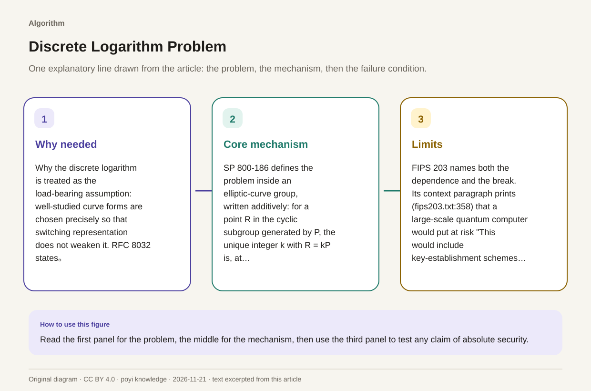
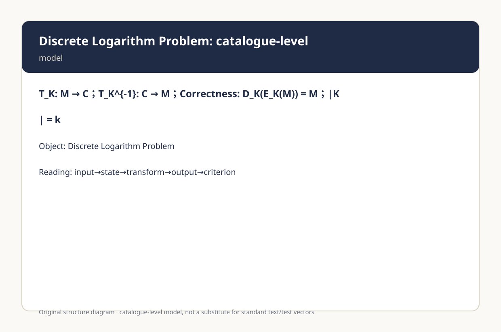

Principles
Algorithm: Discrete Logarithm Problem (离散对数问题). SP 800-186 defines the problem inside an elliptic-curve group, written additively: for a point R in the cyclic subgroup generated by P, the unique integer k with R = kP is, at sp800-186.txt:438-439, "This number is called the discrete logarithm of R to the base P.", and the task is set at 439-440 as "The discrete logarithm problem is the problem of finding the discrete logarithm of R to the base P for any two points P and R on the curve, if such a number exists.". The membership glyph stating that R lies in the subgroup (line 437) degrades in this extraction, so the group setup is paraphrased while the two definition sentences are quoted intact (the body is left-aligned and rejoins with single spaces). The additive notation here is specific to the elliptic-curve case; over finite fields the same problem is posed with exponentiation, which the other cited documents name.

Why it matters
Why the discrete logarithm is treated as the load-bearing assumption: well-studied curve forms are chosen precisely so that switching representation does not weaken it. RFC 8032 states, of the Ed25519 curve, that its change of coordinates relative to Curve25519 means the "discrete logarithm problem is the same as for Curve25519.", and, of the Ed448 form relative to Ed448-Goldilocks, that the change of basepoint "which preserves difficulty of the discrete logarithm.". Both fragments are quoted from single raw lines (they start mid-sentence because the sentence wraps). The design reason this gives is transferability: an equivalent curve keeps the same hard problem, so confidence in the discrete-logarithm assumption on one group carries to the group actually used. RFC 8032 does not quantify that difficulty here, so no concrete bit-level hardness figure is claimed in this entry.
Applications
The discrete logarithm problem is the assumption under NIST's key-establishment standards. NIST IR 8547 prints, at nist-ir8547-final.txt:347-348, "SP 800-56A specifies key-establishment schemes based on the discrete logarithm problem over finite fields and elliptic curves, including several variations of Diffie-Hellman". The marked run deliberately stops there: the very next name, Menezes-Qu-Vanstone, wraps across a hyphen line-break, and the precheck normaliser rejoins that break without the hyphen, so the sentence is quoted only up to the cleanly-printed "Diffie-Hellman". The claim this supports is narrow and standard: the Diffie-Hellman key-establishment family (over both finite fields and elliptic curves) rests on the discrete logarithm problem. What the document specifies beyond the DH/MQV family is not restated here.

Limits & attacks
FIPS 203 names both the dependence and the break. Its context paragraph prints (fips203.txt:358) that a large-scale quantum computer would put at risk "This would include key-establishment schemes and digital signature schemes whose security depends on the difficulty of solving the integer factorization and discrete logarithm problems (both over finite fields and elliptic curves).", and (fips203.txt:354) that "The key establishment schemes specified in SP 800-56A and SP 800-56B are vulnerable to attacks that use sufficiently-capable quantum computers." Together, from this one document, the discrete-logarithm assumption is exactly the thing that collapses: schemes resting on the difficulty of the discrete logarithm problem are, per the text, vulnerable to sufficiently capable quantum computers. Note the scope of the wording: FIPS 203 attributes the break to quantum computers but does not itself name the algorithm, so this entry says quantum computers in the document's own words and does not import the name of a specific attack from another file.
History
The dated history these retained sources print is about the response to the assumption's weakness, not about its origin. FIPS 203 records, at fips203.txt:358, "in 2016, NIST initiated a public Post-Quantum Cryptography (PQC) Standardization process to select quantum-resistant public-key cryptographic algorithms." - a concrete year attached to the standardization that replaced the discrete-log-based schemes. The publication itself is dated fips203.txt:13, "Published August 13, 2024", which is why the entry reports a 2024 document describing a 2016 process. The discrete logarithm problem's own first statement, proposer or decade is not given in any of the four retained files for this row, so this entry names no inventor and no founding date; it records only what the sources actually print, and any earlier history of the problem belongs to other rows in this catalogue.
Worked example & verification
Formal model and reproduction steps
[C=E_K(P;r),\qquad P=D_K(C)]
Discrete Logarithm Problem: the registered public parameters, key material or randomness, and message are mapped through the stated transformation to an output checked against the registered criterion. The worked example is a structural reproduction, not a new test vector; parameter ranges, standard versions and implementation details remain source-bound.
References
- Wikipedia search entry for 离散对数问题. https://zh.wikipedia.org/w/index.php?search=%E7%A6%BB%E6%95%A3%E5%AF%B9%E6%95%B0%E9%97%AE%E9%A2%98
- Handbook of Applied Cryptography (Menezes, van Oorschot, Vanstone). https://www.cacr.math.uwaterloo.ca/hac/